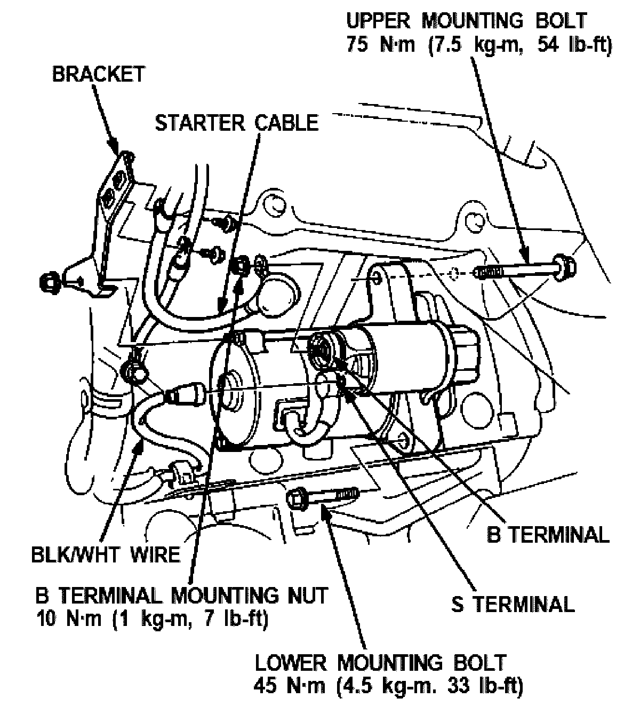
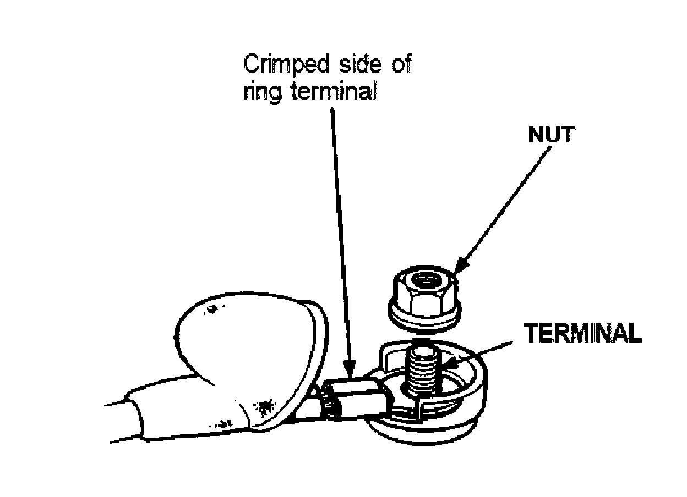

Starter Motor: Service and Repair

Removal
1. Disconnect the battery negative (-) cable.
NOTE: The original radio has a coded theft protection circuit. be sure to get this code number before:
- Disconnecting the battery.
- Removing the No. 56 (7.5 A) fuse from the under-hood relay box.
- Removing the radio.
After service, reconnect power to the radio and turn it on. When the word "CODE" is displayed, enter the 5 digit code to restore radio operation.
2. Remove the starter cable from the starter motor bracket.
3. Disconnect the starter cable from the B terminal on the solenoid, and the BLK/WHT wire from the S terminal.
4. Remove the starter moptor bracket.
5. Remove the left drive shaft.
6. Remove the exhaust pipe.
7. Remove the two bolts holding the starter, and remove the starter by rotating it 180 degrees back and forth, as you guide it down from between the upper arm and the drive shaft. Take care not to damage the drive shaft boot.

Installation
Install in the reverse order of removal. When installing the starter cable, make sure that the crimped side of the ring terminal is facing out.